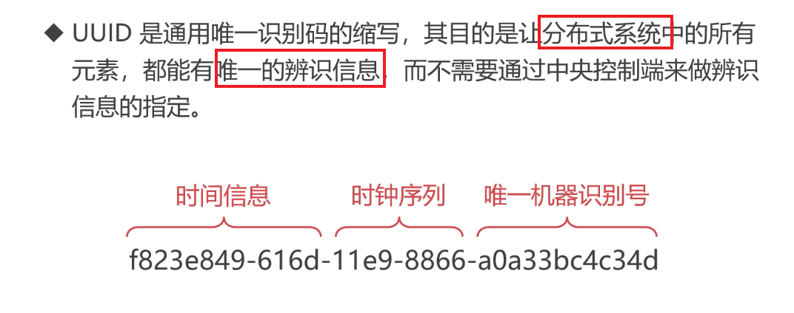

没有比正直更富的遗产。
没有比正直更富的遗产。No more than just rich heritage.
高效使用Mysql
uuid VS 数字
uuid 通用唯一识别码的缩写。
SELECT UUID(); |
UUID优点
- 节点即可生成UUID，降低全局节点压力
全局唯一- 跨服务器合并数据很方便；
UUID缺点
- 占用
16个字节,比4字节的INT和8字节的bgint更占内存； - UUID是字符串，查找速度慢
- UUID 不是顺序增长，数据写入ID因为随机ID
需要判断写入哪儿,所以写入数据IO变大。
主键自动增长的优点
- 占用内存小；
- 检索数字快于字符串
- 自动增长，IO写入连续性更好。
总结
- ORM [Mycat] 可以生成唯一的连续的数字主键。
- 优先考虑子增长，得研究下node&Mycat
修改表结构
- 在线修改表结构，很可能造成重大事故；
- 常规做法：业务停机，维护表结构；
- 不影响正常业务的表结构可以在线修改。
ALTER Table 修改表结构的弊病
- 修改表结构是 表级锁，更改表结构时，影响写入操作；
- 如果修改表结构失败，必须还原，耗时很长；
- 大数据表记录多，锁表时间长。
对应方案
PerconaTookit 工具包
Percona公司提供免费的维护mysql的PerconaTookit工具包
pt-online-schema-change实现：不锁表，修改表结构
- 拷贝表结构：
t_order=>t_order_new; - 建
触发器，如有新数据写入t_order，就copy到t_order_new; - 数据同步结束 && 没有数据写入，就删除
t_order； - 更改
t_order_new=>t_order；
【使用Percona-Toolkit工具】
安装第三方依赖包
yum install -y perl-DBI
yum install -y perl-DBD-mysql
yum install -y perl-IO-Socket-SSL
yum install -y perl-Digest-MD5
yum install -y perl-TermReadKey安装Percona-Toolkit
进入到Percona-Tookit离线文件所在的目录
rpm -ivh *.rpm把客户收货地址表中的name字段改成VARCHAR(20)
pt-online-schema-change --host=192.168.99.202 --port=3306 --user=root --password=abc123456 --alter "MODIFY name VARCHAR(20) NOT NULL COMMENT '收货人'" D=neti, t=t_customer_address --print --execute |
订单号 VS 流水号
- 订单号既是订单的唯一编号，而且经常被用来检索，所以应当是数字类型的主键
- 流水号是打印在购物单据上的字符串，便于阅读，但是不用做查询
物理删除 VS 逻辑删除
物理删除的代价：
- 恢复麻烦
- 主键不连续，分页查询变慢
SELECT ... FROM ... LIMIT 1000, 20; |
什么样的数据不合适物理删除
- 核心业务，如：订单表、账户表、优惠券表等